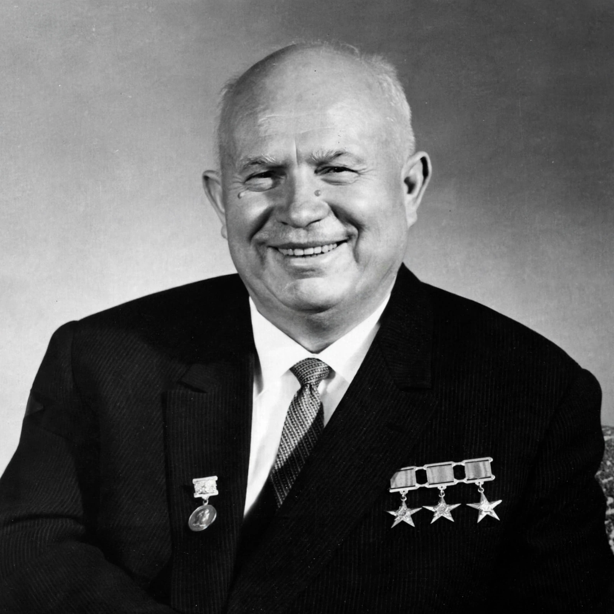

From Wikipedia, the free encyclopedia
| Nikita Khrushchev | |
|---|---|
 Khrushchev in 1961 | |
| First Secretary of the Communist Party of the Soviet Union | 14 September 1953 – 14 October 1964 |
| Premier of the Soviet Union | 27 March 1958 – 14 October 1964 |
| Born | 15 April 1894, Kalinovka, Russian Empire |
| Died | 11 September 1971 (aged 77), Moscow, Soviet Union |
| Predecessor | Joseph Stalin (as party leader) |
| Successor | Leonid Brezhnev |
Nikita Sergeyevich Khrushchev (15 April 1894 – 11 September 1971) was the First Secretary of the Communist Party of the Soviet Union from 1953 to 1964 and chairman of the country's Council of Ministers from 1958 to 1964. During his rule, Khrushchev stunned the communist world with his denunciation of his predecessor Joseph Stalin's crimes and embarked on a policy of de-Stalinization with his key ally Anastas Mikoyan. He sponsored the early Soviet space program and enacted moderately liberal economic and domestic reforms.
Born to a poor peasant family in Kalinovka, near the present-day Russian–Ukrainian border, Khrushchev worked as a metal fitter in the Donbas mines, served as a political commissar in the Russian Civil War, and rose through the party apparatus in Ukraine and Moscow under Stalin's patronage. He was implicated in the purges of the 1930s and in the political administration of Ukraine during and after the Second World War.
After Stalin's death in March 1953, Khrushchev outmanoeuvred rivals including Lavrentiy Beria (arrested and executed) and Georgy Malenkov to become party leader. At the 20th Party Congress in February 1956 he delivered the "Secret Speech", On the Cult of Personality and Its Consequences, denouncing Stalin's purges and deportations; millions of Gulag prisoners were released in the ensuing "Khrushchev Thaw". His Virgin Lands campaign sought to expand agriculture, and prefabricated apartment blocks — khrushchyovkas — eased the housing crisis. The USSR under Khrushchev launched Sputnik 1 in 1957 and sent Yuri Gagarin into orbit in 1961.
Khrushchev's tenure saw the suppression of the Hungarian Revolution of 1956, the U-2 incident of 1960, the construction of the Berlin Wall in 1961, and the Cuban Missile Crisis of October 1962, which brought the superpowers to the brink of nuclear war before a negotiated withdrawal. The Sino-Soviet split deepened through his rule. In October 1964, citing erratic behaviour, failed agricultural policies and rudeness toward colleagues, the party leadership ousted him; he lived in enforced retirement in Moscow until his death in 1971, his memoirs smuggled to the West.
See also: Soviet Union · De-Stalinization · Cold War